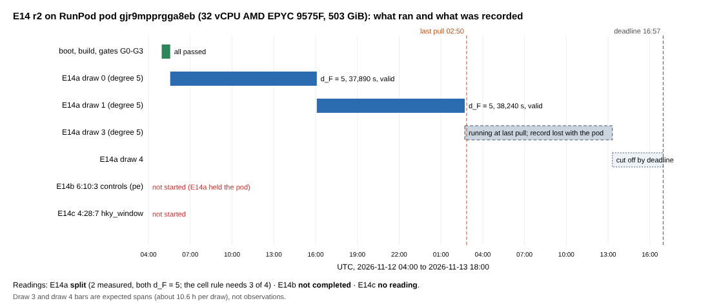

Fall-degree study, preregistration Amendments 20, 21, 25, 27–30. Pod gjr9mpprgga8eb on RunPod: 32 vCPU AMD EPYC 9575F, 503 GiB, USD 2.08/h, launched 2026-11-12 04:57 UTC, deadline 2026-11-13 16:57 UTC. Source a2be6609 (tree hash checked). Records: e14/score.json (section r2), e14/pod-r2/out-r2j/.

| Unit | What happened | Registered reading | Prediction outcome |
|---|---|---|---|
| Gates G0–G3 | G0 7/7 tests; G1 and G2 diffs empty; G3: pe fastest at 8 threads (341 s) | passed | G2 passes (0.90): occurred |
| E14a draw 0 | d_f = 5 in 37,890 s; degree ≤ 4 equal to E10 | d_F = 5 [pcc:unverified] | "split" (0.05) occurred |
| E14a draw 1 | d_f = 5 in 38,240 s; degree ≤ 4 equal to E10 | d_F = 5 [pcc:unverified] | |
| E14a draw 3 | running at the last pull (2026-11-13 02:50 UTC); record lost with the pod | not completed | |
| E14a draw 4 | cut off by the deadline | not completed | |
| E14a cell | 2 measured, both read 5; the rule needs ≥ 3 of 4 for "d_F = 5" | split | |
| E14b (6:10:3 controls) | not started: E14a held the pod until the deadline | not completed | "not completed" (0.35) occurred |
| E14c (4:28:7) | not started | no reading | "no reading" (0.80) occurred |
The combined statement "independent agreement (E13b + E14b)" is not made, and E13b's reading stays "disagreement".
Both measured draws closed degree 5 at full rank: 974,982 of 974,982 columns in 4 rounds. Degree 5 took 37,799 s and 38,151 s of the totals on 32 threads, against 91 s for degree 4. The cell is called "split" only because two draws were measured. It is not a disagreement: no measured draw reads anything other than 5.
A rerun of draws 3 and 4 alone, at about 11 h each on the same pod class (about USD 46 at USD 2.08/h), with pulls or an S3 upload after every draw, would decide the cell. Nothing is retried without an amendment.